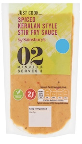
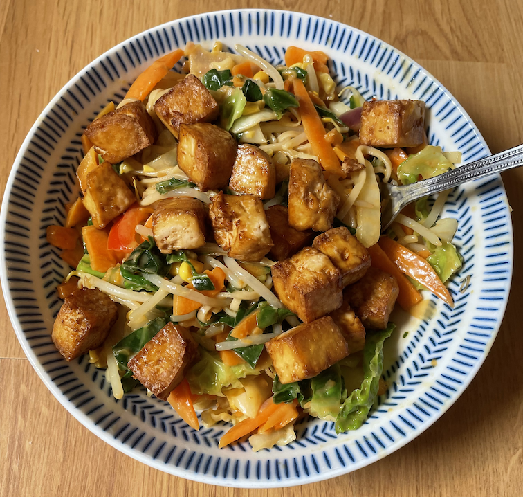
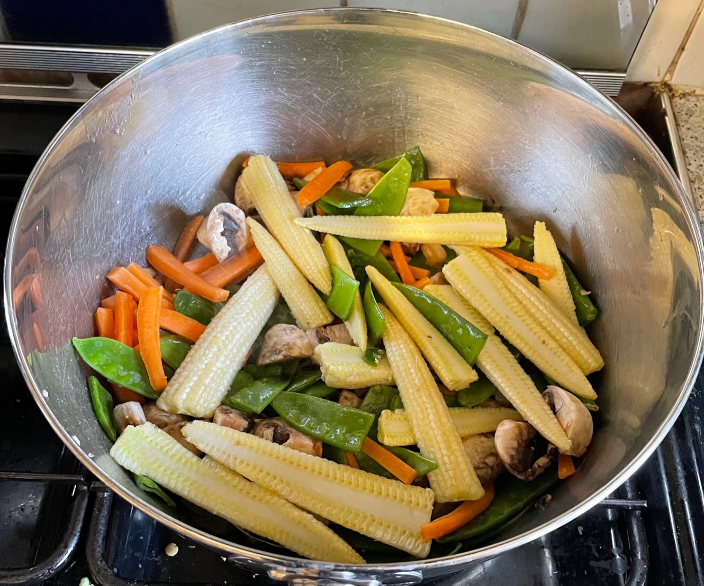
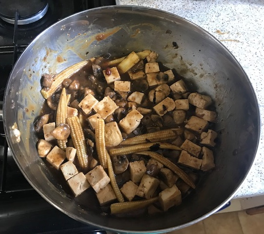
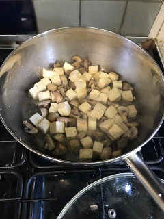
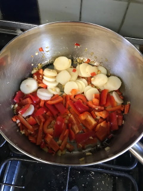

Stir fry
- Hot wok cold oil then food
- Add baking soda to meat before marinade to alkalise and tenderise (p117 The Wok)
- Cut meat against grain at angle for more surface area for sauce
Recipes
Veg
Green
- Sprouting broccoli - stalks finely chopped
- Cabbage
- Fine beans
- Green pepper - finely chopped
- Lettuce
- Mange tout
- Pak choi
- Sugar snap peas
Red / orange
- Carrots - finely chopped or ribbons from peeler
- Peppers - finely chopped
Beige
- Baby corn - cut in half lengthways, saute in sesame oil
- Bamboo shoots
- Bean sprouts
- Corn kernels
- Mushrooms
- Sweetcorn
- Tempeh
- Tofu
- Water chestnuts
Sauces
- Teriyaki
- Sharwoods black bean
- Sainsbury Kerala sauce
- Coop sweet chilli
Bad
Meat / Soya
Combinations
Prawns, tofu & black bean sauce
- Tofu in air fryer, then prawns
- Pepper & carrots for 5 mins then baby corn & mange tout added
Tofu & Keralan sauce
- 600g Sainsbury Sweet and crunchy stir fry mix
- serve 2:1 veg:noodles


Mange tout, baby corn, mushrooms, carrots, king prawns & black bean sauce

Tofu, mushrooms, baby corn & black bean sauce

Tofu, mushrooms, water chestnuts, red pepper & sweet chilli sauce

